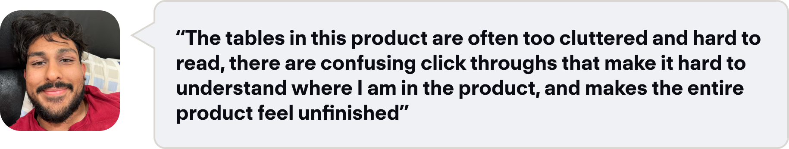
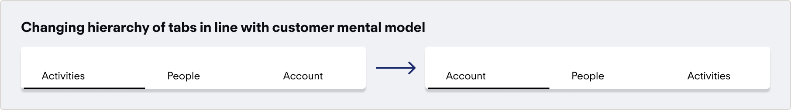
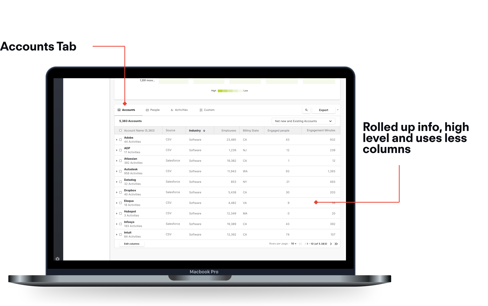

Connecting the dots within Demandbase's Datatables

Demandbase
Q3 2021
Product Designer, Researcher
Sketch, Usertesting.com, Invision
A foundational component in B2B design is the data table.
A lot of B2B design is predicated around datatables - presenting information within these tables in a clear, concise and contextual manner is an art of its own. This project was an ongoing undertaking to refresh and rebrand the platform datatables. While a big portion of this project was focused on the visual design of the tables and ensuring that we deliver a slick, elegant solution, an ongoing study was done on improving the usability of the tables, and ensuring the data is clean and human readable. We completed this through user testing and rounds of iteration to deliver an updated and powerful new component that went live in 2022.
A little sneak peek of what we landed on.

Redesign Demandbase's Tables, and create a new fluid component to be adopted throughout the product.
Faster load times, new component added to design system.
This project in particular stemmed from a piece of user feedback surrounding our table patterns:
Customers indicated that due to the data-dense nature of our tables, it was hard to decide the next best action.
Tables lack contextual information which gives you a heads-up on why or how something happened, and allows the user to perceive the information exchange going on.
Each product segment had different needs in terms of the type of data being shown, so the tables started to look drastically different in terms of the aesthetic.
create powerful, human readable and contextual data tables in our core products?
To understand our problem statement better, I decided to decompose what contextual really manes.
The main takeaway was that data is useless without a purpose or a story.

Similarly, I did this with the second part of the problem statement..
The key theme here was using progressive disclosure to hide information till it is truly actionable.

From this analysis, I was able to map these issues to some of the feedback
The core finding was that the sheer number of columns can make the tables overwhelming and confusing

From here, I really tried to find the next best actions for users to do with the data
The first thing I considered in making data more contextual was to provide a story. Why do I want to use this table? What metrics am I looking at? How often do I check?
These questions inform information architecture, prominence and default states, so they were important questions to answer.

A key need here is to be able to hide non-essential information that is not necessarily in the context of the user's session.
We need progressive disclosure to hide non-actionable information till a user demonstrates intent to see it.
The first thing I considered in making data more contextual was to provide a story. Why do I want to use this table? What metrics am I looking at? How often do I check?
These questions inform information architecture, prominence and default states, so they were important questions to answer.
A key need here is to be able to hide non-essential information that is not necessarily in the context of the user's session.
To better understand howe we could show some of this, I conducted a group brainstorm, and then sorted by level of effort from an engineering perspective.

From this takeaway, it was clear that we needed expand and collapse tables.
Still, I needed to dissect this further and started to list some of the pros and cons.

The hard part about introducing expand and collapse tables, is managing hierarchy with information.
There are two parts to figure out - what are we showing/hiding, and the aesthetic of it. To start with what we are showing and what to hide, I considered just exactly what we are showing, and tried to create a story out of it:

I took a shot at thinking of how to show branching, and association through an indented row.
By thinking of what this could look like in a table, we could hide some of the information that is associated. For the aesthetic to represent this, I initially kept the same visual cue with a blank first column to indicate branching, as seen below.

I looped in our engineers to understand feasibilty, and was pleased to find it was possible.
Perhaps the most satisfying part of this process was learning that there already was a component within the JavaScript library that we used for this kind of use case to gain inspiration.

We used external and internal users of the product to go through a moderated user testing session.
Our testing was conducted with a mix of external and internal users who were asked to complete basic tasks through a moderated session. Some of the key insights were packaged into cards:

From here we could identify some areas of improvement.
Testing revealed our user mental model, which was mismatched with how we put it together.
Our testing showed that users would struggle with the hierarchy, so I proposed switching it a little. First, users first engage with an account, see the associated score, and then move over to individuals in that account and the activities associated with that person. To reflect this, I changed the hierarchy as such:
What I landed on after careful iteration.
The top level of the accounts tab can monitor the accounts that show the most engagement or interest in your product.
Clicking on a row opens the expandable row, showing the master detail below.

Seeing the top level of the people's tab allows you to quickly sort by a key metric like engagement, and then add the people to a list.

The next is digging into the activities for a specific person, this allows you to find out who to target in campaigns, or to reach out to directly for sales opportunities.
Seeing which type of activity is most successful allows you to tailor your marketing attempts to invest in successful activities, as well as see exactly who is engaging with critical types.

Search can be complex for expand and collapse views because a sub-row needs an affordance.
The last piece was thinking through the search pattern for this type of table. To get around this, I proposed a search that went through the entire table, and highlighted areas that match in both the top, and the bottom layer.

Searching this way would allow you to traverse both arrays at the same time, at the cost of search time.

A full click through of the prototype
From finding an account to examining the people who have shown intent
I learned how important design systems is to powering a team to cover all the potential use cases that a customer could have.
This was a really interesting project that really forced me to scope down general feedback into clean, concise improvements. In the end I was able to deliver a component that was playfully named “iTables” to showcase my effort on them. They went into production GA in June 2022, but a proof of concept was implemented in the end of 2021 with the ad plans table, which I will include below.
If I had more time, I would love to see how this cales to different areas of the product.
A followup on this project that would be a v2 improvement would be to see how we could adapt this table to new areas within the product. It is important to stay pragmatic and not apply the component willy nilly, but to still think of where we can make things more efficient.